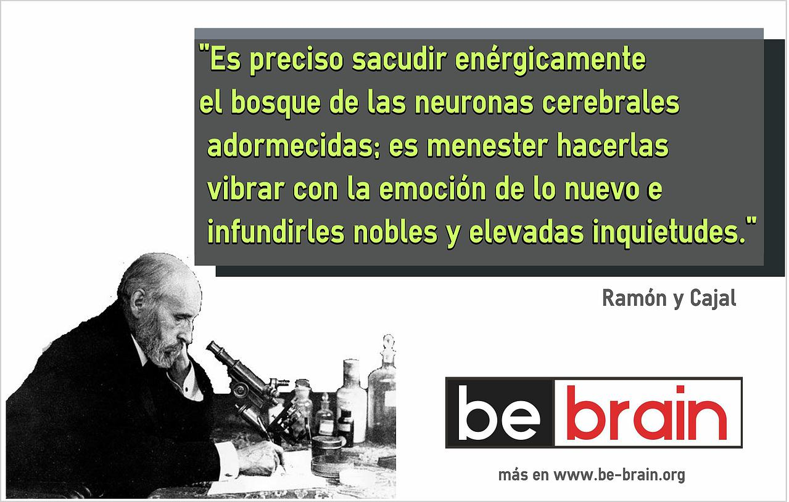
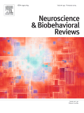
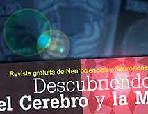
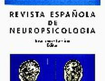

Tipo: Conferencia Ted (18:43).
Titulo: La búsqueda por comprender la conciencia.
Autor: Antonio Damasio.
Resumen: Cada mañana nos despertamos y recuperamos la conciencia (un suceso maravilloso),
pero ¿qué es exactamente lo que recuperamos? El neurocientífico Antonio Damasio utiliza
esta sencilla pregunta para darnos una visión de cómo nuestros cerebros crean nuestro sentido del yo.
Tipo: Conferencia Ted (19:57).
Título: La verdadera razón del cerebro.
Autor: Daniel Wolpert.
Resumen: El neurocientífico Daniel Wolpert parte de una premisa sorprendente: el cerebro evolucionó,
no para pensar o sentir, sino para controlar el movimiento. En esta charla rica en datos y entretenida,
Wolpert nos da una idea de cómo el cerebro crea la gracia y la agilidad del movimiento humano.
Tipo: Conferencia Ted (15:34).
Título: El mal de Parkinso, depresión y el interruptor que podría apagarlos.
Autor: Andrés Lozano.
Resumen: La estimulación cerebral profunda es cada vez más precisa. Esta técnica permite a los cirujanos
colocar electrodos en casi cualquier área del cerebro, para corregir la disfunción.Andrés Lozano nos muestra
algunos ejemlpos de como esta técnica ha funcionado en algunos pacietes.
Título: El cerebro: el último enigma.
Duración: 50:43.
Tema: Cerebro general, pensamiento, acciones.
Resumen: La máquina más asombrosa de la naturaleza y el mayor reto al que se enfrenta la ciencia es una pequeña masa
de células nerviosas de apenas kilo y medio de peso forjada, eso sí, tras millones de años de evolución. El cerebro,
sede de la memoria, de los sentimientos y de la inteligencia, es también el reducto de la mente, de la consciencia y
de todo lo espiritual. Se trata, en definitiva, del lugar donde se esconde la esencia misma de cada persona.
Productor: New atlantis.
Título: El universo del cerebro.
Duración: 49:33.
Tema: Cerebro general, evolución, etología.
Resumen: Documental de la BBC que hace un repaso al pasado y presente de nuestro cerebro; nos muestra de manera sencilla
y entretenida a la vez hasta dónde ha podido llegar la ciencia en explicar su funcionamiento y sus complejos procesos
químicos en los que se encierran los secretos de nuestra conciencia, sentimientos, valores, principios, inquietudes...
Productor: BBC.
Título: El laberinto autista.
Duración: 58:37.
Tema: Autismo, Tea, asperger.
Resumen: Descripción del trastorno del espectro autista, explicación de los sintomas, tratamiento, cuidados, rutinas, etc
todo mostrado con ejemplos desde el interior de las familias que tiene un miembro con este tipo de trastorno y con
profesionales de este ámbito.
Productor: RTVE.
Título: El legado de Cajal: Las flechas de la neurociencia.
Duración: 18:14.
Tema: Biografia de Santiago Ramón y Cajal.
Resumen: La SENC ha promocionado la creación de un video-documental titulado "EL LEGADO CAJAL: LAS FLECHAS DE LA NEUROCIENCIA"
sobre la trascendencia que el legado de Ramón y Cajal, padre de la Neurociencia, tuvo para generaciones posteriores y resaltando
la relevancia que tiene en la actualidad.
Productor: SENC.
Título: Psiconeuroinmunología (Parte 1).
Duración: 40:33.
Tema: Psiconeuroinmunología.
Resumen: Documental dividido en tres partes que trata de una introducción a la psiconeuroinmunología, explicación de como,
donde y quien desarrollo esta desciplina, ejemplos de su aplicación.
Productor: Discovery Channel.
Título: Psiconeuroinmunología (Parte 2).
Título: Psiconeuroinmunología (Parte 3).
Entrevistado: Antonio Damasio.
Duración: 26:31.
Resumen: El premio Príncipe de Asturias, Antonio Damasio tomó mucho tiempo para encontrar la manera de acercarse
a lo que motiva a su investigación: las grandes cuestiones humanas. Ingeniero, cineasta, escritor, filósofo y neurocientífico...
Al ver las diferentes maneras como complementarias, su historia de vida y su forma de pensar simbolizan la complejidad
del cerebro humano, el órgano que lo convirtió en uno de los principales neurocientíficos de hoy.
En una entrevista exclusiva, una alianza de las Fronteras del Pensamiento con CPFL Instituto de Cultura.
Productor: Fronteiras do pensamento.
Entrevistado: Rodolfo Llinás (Parte 1).
Duración: 45 min (4 videos).
Resumen: El científico y neurofisiólogo colombiano, premio Albert Einstein por la UNESCO, Rodolfo Llinás,
fue entrevistado por Darío Restrepo en CityTV y habló sobre las falencias de la educación, la naturaleza
del cerebro humano, su percepción sobre Dios y los temas que lo apasionan en torno a los aspectos que definen
lo que llamamos "ser humano".
Productor: CityTv.
Entrevistado: Rodolfo Llinás (Parte 2).
Entrevistado: Rodolfo Llinás (Parte 3).
Entrevistado: Rodolfo Llinás (Parte 4).

LIBROS
MANUALES
CENTROS DE INVESTIGACIÓN
REVISTAS
INSTITUCIONES
PÁGINAS DE INTERES
Instituto de Neurociencias de Castilla y León
El Instituto de Neurociencias de Castilla y León es un centro creado en 1998, dedicado a la investigación científica
en el sistema nervioso normal y sus patologías. Como centro universitario, su actividad también está enfocada a la
formación de nuevos investigadores y a la divulgación científica. Es dependiente de la universidad de Salamanca
Página Web
Instituto Cajal
El Instituto Cajal es un Centro de Investigación en Neurobiología perteneciente al Consejo Superior de Investigaciones Científicas.
Se trata del centro de investigación neurobiológica más antiguo de España. Sus investigadores y profesionales de renombre
contribuyen al avance espectacular de la Neurobiología en todo el mundo. El IC se prepara para afrontar los retos del futuro
y pone al servicio de la sociedad el Legado Cajal.
Página Web
Institut de Neurociències
En el año 2003 un grupo de biólogos moleculares, fisiólogos, neuropatólogos, histólogos, psicólogos, psicobiólogos y
bioinformáticos que trabajan en la UAB crearon el INc con el objetivo estratégico de dejar atrás las disciplinas tradicionales,
y abordar de manera multidisciplinaria y translacional cuestiones claves del cerebro como son la neurodegeneración, la
neuroregeneración y las bases de la mente normal o trastornada.
Página Web
Instituto de Neurociencias del Principado de Asturias
El INEUROPA está formado por unidades de investigación tanto de orientación básica como clínica con personal adscrito a la
Universidad de Oviedo. Los principales objetivos del INEUROPA son similares a los planteados por la Red Europea de Institutos
de Neurociencias (ENI) donde el servicio prioritario es ofrecer el uso de distintos laboratorios e infraestructuras de
investigación básica y clínica en el campo de las neurociencias, así como formación en este campo a sus miembros mediante
la colaboración entre los distintos grupos de investigación que componen el instituto.
Página Web
Instituto de neurociencia "Federico Olóriz"
El Instituto de Neurociencias de Castilla y León es un centro creado en 1998, dedicado a la investigación científica en
el sistema nervioso normal y sus patologías. Como centro universitario, su actividad también está enfocada a la formación
de nuevos investigadores y a la divulgación científica. Es dependiente de la universidad de Salamanca.
El Instituto de Neurociencias “Federico Olóriz” es el decano de los Institutos de investigación de la Universidad
de Granada y el segundo en antigüedad entre los Institutos de España. Desde su inicio ha tenido una actividad ininterrumpida.
En 1990 se jubiló su director fundador, y la actividad del Instituto, que había estado centrada fundamentalmente en estudios
anatómicos y antropológicos, se reorienta hacia el estudio multidisciplinar de la Neurociencia.
Página Web
Basque Center on Cognition, Brain and Language
El Basque Center on Cognition, Brain and Language es un centro internacional de investigación interdisciplinar para el estudio
de la cognición, el cerebro y el lenguaje fundado conjuntamente por Ikerbasque, Innobasque, la UPV-EHU y la Diputación de Gipuzkoa.
Página Web
Instituto de Neurociencias de Alicante
El Instituto de Neurociencias (IN) fue oficialmente fundado en febrero de 1990, por el Gobierno Autonómico de la Generalitat Valenciana,
como un Instituto Universitario perteneciente a la Universidad de Alicante. Los objetivos de este instituto eran el desarrollo de
diferentes actividades además de la investigación científica, tales como la organización de un programa de Doctorado, conferencias,
seminarios, además de establecer presupuestos comunes y coordinar servicios.
Página Web
CIMCYC
En el Centro de Investigación Mente, Cerebro y Comportamiento (CIMCYC) de laUniversidad de Granada (UGR) compartimos el
objetivo de conocer cómo los procesos mentales y la conducta emergen de la actividad normal del cerebro, y cómo los problemas
de comportamiento están relacionados con el deterioro de procesos cerebrales. El CIMCYC está compuesto por un gran número de
equipos de investigación dedicados al estudio de todos los aspectos de la Psicología, abarcando la Psicología Clínica y de
la Salud, el Desarrollo Humano, la Psicología Aplicada y las funciones cognitivas superiores, así como las interacciones sociales.
Página Web
INTERÉS GENERAL
BRAINFACTS
BRAINETHICS
NEUROGUIDE
GENES TO COGNITION
SAYLOR (curso)
B.B.D.D. WIKIPEDIA
NAUKAS
REVISIÓN TEÓRICA
BRAINMUSEUM
SISTEMANERVOSO
COURSERA WIKI
COLUMBIA UNIVERSITY
BIOON
HANDWRITEN TUTORIALS (videos)
ATLAS CEREBRALES E ILUSTRACIONES
HEAD NECK BRAIN SPINE
ANATOMIE AMSTERDAM
LIFESCIENCEDB
THE UNIVERSITY OF UTAH
ECCLES HEALTH SCIENCES LIBRARY
BRAINBROWSER
BIODIGITAL HUMAN
BRAIN MAP
WASHINGTON UNIVERSITY
OTROS
SINAUER NEUROSCIENCE
NEUROPORTRAITS
"El error de Descartes"
Ver Ficha
Autor: Antonio Damasio
Año: 1994
Resumen: Damasio en este libro trata sobre la idea de Descartes, de que la mente estaba separada del cuerpo
(era un ente aparte).Trata de mostrar las bases del error del filósofo francés, estudiando a pacientes con daños
en la corteza cerebral. Nos lleva a descubrir que los procesos mentales tienen un sustrato biológico. También habla
sobre las emociones y como estas afectan a la razón humana.
"El Cerebro y el mito del yo"
Ver Ficha
Autor: Rodolfo Llinás
Año: 2002
Resumen: En este libro, el aspecto central es tratar el desarrollo de las habilidades que adquiere el hombre en su
ciclo vital, desde una perspectiva biológica, perspectiva que aporta la neurociencia, muy importante en este libro.
Trata temas como la comunicación de los seres humanos, la conducta o la cognición. Es un libro imprescindible para
quien está en el ámbito de las ciencias de la conducta.
"En busca de Spinoza"Ver Ficha
Autor: Antonio Damasio
Año: 2003
Resumen: En busca de Spinoza es una aclamada obra de divulgación científica del neurocientífico Antonio Damasio.
Versa acerca de la emoción y el sentimiento humano, y cómo la interpretación actual está en consonancia con la antigua
visión del filósofo Baruch Spinoza.
"Y el cerebro creó al hombre"
Ver Ficha
Autor: Antonio Damasio
Año: 2010
Resumen: Damasio en este libro se plantea la cuestión de cómo pudo el cerebro llegar a desarrollar unas habilidades y
destrezas como el lenguaje, la conciencia moral, la creatividad o la consciencia. ¿Cuál es el origen de todos estos
procesamientos y fenómenos? Damasio nos demuestra una vez más en un lenguaje ameno, sencillo incluso poético, como es
posible abordar cuestiones tan complejas de la manera más simple (que el tema puede permitir).
"Revista de neurología"
Ver Ficha
Temas: Neurociencia diversos
Factor de impacto: 0.926
Editor: Catalogo editorial
Página web
"Nature (sección neurociencia)"
Ver Ficha
Temas: Neurociencia diversos
Factor de impacto: 29.97
Editor: Nature publishing group
Página web
"Science"
Ver Ficha
Temas: ciencia diversos
Factor de impacto: 30.93
Editor: AAAS
Página web
"Behavioral Brain Research"
Ver Ficha
Temas: Neurociencia de la conducta
Factor de impacto: 3.391
Editor: Elsevier
Página web
"Behavioral Neuroscience"
Ver Ficha
Temas: Neurociencia de la conducta
Factor de impacto: 3.25
Editor: A.P.A.
Página web
"Neuroscience & Medicine"
Ver Ficha
Temas: Neurociencia.
Factor de impacto: 1.03
Editor: Scientic Research
Página web
"Neuroscience & Biobehavioral reviews"
Ver Ficha
Temas: Neurociencia y conducta
Factor de impacto: 10.284
Editor: Elsevier
Página web
"Neuroscience"
Ver Ficha
Temas: Neurociencia
Factor de impacto: 3.327
Editor: Elsevier
Página web
"Mente y cerebro"
Ver Ficha
Temas: Neurociencia, Psicología
Editor: Prensa Científica S. A.
Página web
"Cuadernos de neuropsicología"
Ver Ficha
Temas: Neuropsicología
Editor: Centro de Estudios Académicos en Neuropsicología
Página web
"Descubriendo el cerebro y la mente"
Ver Ficha
Temas: Neurociencia diversos
Editor: Asociación educar
Página web
"Revista española de neuropsicología"
Ver Ficha
Temas: Neuropsicología
Editor: Universidad de Sevilla
Página web
"Neurocirugía"
Ver Ficha
Temas: Neurocirugía
Editor: Sociedad española de neurocirugía
Página web
"Alzheimer"
Ver Ficha
Temas: Neurogerontología.
Editor: Editorial Glosa
Página web
Principios de neurociencia
Ver Ficha
Temas: Neurociencia.
Autores: Eric R. Kandel
Editorial: Mcgraw-Hill
Año: 2001
Neurociencia y conducta
Ver Ficha
Temas: Neurociencia, psicología.
Autores: Eric.R.Kandel, Thomas M. Jessell y James. H. Schwartz
Editorial: Practice Hall
Año: 1997
Psicología Biológica
Ver Ficha
Temas: Neurociencia cognitiva.
Autores: James W. Kalat
Editorial: Cengage Learning Editores S.A
Ultimo Año edición: 2010
Neuroimagen
Ver Ficha
Temas: Neuroimagen y neurotecnología
Autores: Fernando Maestú Unturbe, Marcos Ríos Lago y Raúl Cabestrero Alonso.
Editorial: Elsevier Masson
Año: 2007
Principios de neurociencia
Ver Ficha
Temas: Neurociencia general
Autores: Duane E. Haines.
Editorial: Elsevier Masson
Año: 2003
Fisiología de la conducta
Ver Ficha
Temas: Anatomía, conducta, trastornos y aprendizaje
Autores: Neil R. Carlson
Editorial: Pearson Addison Wesley
Año: 2014
SFNSociety for Neuroscience.
Ver Ficha
La Sociedad para la Neurociencia es la organización más grande del mundo de científicos y médicos dedicados
a la comprensión del cerebro y el sistema nervioso. La organización sin ánimo de lucro, fue fundada en 1969,
ahora cuenta con cerca de 40.000 miembros en más de 90 países.
Página Web
CSICConsejo superior de investigaciones científicas.
Ver Ficha
La Agencia Estatal Consejo Superior de Investigaciones Científicas (CSIC) es la mayor institución pública
dedicada a la investigación en España y la tercera de Europa. Adscrita al Ministerio de Economía y Competitividad,
a través de la Secretaría de Estado de Investigación, Desarrollo e Innovación, su objetivo fundamental es
desarrollar y promover investigaciones en beneficio del progreso científico y tecnológico, para lo cual está abierta
a la colaboración con entidades españolas y extranjeras.
Página Web
SENSociedad Española de Neurología.
Ver Ficha
Sus principales actividades son:
- Organizar una reunión científica anual, así como cualquier otra actividad de carácter científico médico y científico
cultural, tales como congresos, sesiones, reuniones, debates, foros, simposios y otras manifestaciones similares que
estime precisas y oportunas para el cumplimiento de los fines de la entidad.
-Acordar la concesión de premios, becas y ayudas a la docencia e investigación científicas en el campo de la Neurología
o ámbitos relacionados directa o indirectamente con la misma y promover proyectos de investigación.
-Editar, publicar, producir y/o distribuir publicaciones relacionadas directa o indirectamente con la especialidad médica
de la Neurología, de cualquier tipo y en cualquier medio o soporte; encargar, redactar y divulgar informes y guías
diagnósticas y terapéuticas. Representar a los neurólogos de España en foros neurológicos internacionales.
Página Web
SENCSociedad española de neurociencia.
Ver Ficha
La SENC tiene como objetivo:
1. Promover el desarrollo del conocimiento en el área de la Neurociencia, reuniendo a científicos de distintas disciplinas,
y facilitando la integración de la investigación dirigida a todos los niveles de organización del sistema nervioso.
2. Promover la educación en el campo de la Neurociencia.
3. Promover la relación con sociedades y organizaciones homólogas nacionales e internacionales.
4. Informar a la opinión pública sobre los resultados y las implicaciones de las investigaciones en curso en las áreas de la Neurociencia.
Página Web
Agencia Iberoamericana para la Difusión de la Ciencia y la Tecnología
Ver Ficha
DiCYT es el nombre de la Agencia de Noticias para la divulgación de la Ciencia y Tecnología del Instituto ECYT de la
Universidad de Salamanca. La iniciativa permitió crear un sistema regional de información especializado que surgió en el año 2003,
con el objetivo de facilitar a la opinión pública el acceso a noticias especializadas en temas científicos y tecnológicos
en el ámbito de Castilla y León. Tras cinco años de andadura, se pone en marcha el proyecto DiCYT Red Iberoamericana de
Divulgación Científica, Educación y Cultura, con el objetivo de fortalecer las relaciones entre investigadores, educadores
e instituciones y personas vinculadas a la cultura de habla hispana y portuguesa, fomentando la colaboración y la creación
de sinergias mediante el intercambio de recursos y conocimientos.
Página Web
DANA Foundation
Ver Ficha
Dana Foundation es una organización privada sin ánimo de lucro, que apoya la investigación del cerebro a través de becas,
publicaciones y programas educativos. Comprometido a avanzar en la investigación del cerebro y para educar al público de
una manera responsable sobre el potencial de la investigación.
Página Web
Fundacion Ramón Areces
Ver Ficha
La Fundación Ramón Areces está orientada desde su constitución en 1976 al mecenazgo científico, mediante el fomento de la
investigación, la contribución a la generación de capital humano y la difusión del conocimiento.
Desarrolla su actividad en todo el territorio nacional en los ámbitos de las Ciencias de la Vida y de la Materia,
las Ciencias Sociales y las Humanidades.
La Fundación tiene como principales objetivos contribuir a crear una sólida estructura científica y tecnológica en España,
que permita mejorar la vida de las personas y a la búsqueda de soluciones a los retos de futuro que la sociedad moderna tiene
ante sí en sus principales órdenes: económico y educativo, principalmente.
Página Web
ALZHEIMER
PARKINSON
AUTISMO
ESQUIZOFRENIA
La enfermedad de Alzheimer es una enfermedad neurodegenerativa, progresiva y hasta el momento crónica.
Es cada vez más común en las sociedades desarrolladas, ya que la edad avanzada es el principal factor de riesgo
(0.9% de incidencia con edades entre 60-64 años, 18% de incidencia con edades de 90-94 años, en Europa).
Al ser una enfermedad progresiva los síntomas van apareciendo lentamente, agravándose por el paso del tiempo,
los síntomas más comunes son: pérdida de memoria, dificultad para realizar actividades diarias, para la escritura,
el habla y la orientación, agresividad, alteración de los ciclos del sueño, delirios, depresión y ansiedad.
La enfermedad del Alzheimer afecta a diversas áreas cerebrales como la corteza, el área entorrinal, el hipocampo,
la amígdala o los tálamos entre otros. La muerte neuronal junto con la pérdida de sinapsis son los principales problemas
que se asocian a la enfermedad, los tipos de neuronas más afectadas son las neuronas piramidales glutamatérgicas y
las colinérgicas. La principal hipótesis mantenida hasta el momento es que la formación de placas densas de las proteínas
tau y beta-amiloide crean la formación de ovillos neurofibrilares intracelulares afectan al citosqueleto de las neuronas
y destruyen el sistema de transporte de estas.
La enfermedad de Parkinson es una enfermedad neurodegenerativa que conduce a un trastorno del movimiento.
Se caracteriza por unos síntomas iniciales, que lentamente se van agravando; rigidez, temblor durante
la inactividad (no durante el sueño y el movimiento voluntario), dificultad para iniciar movimientos y lentitud de estos.
En ocasiones, los pacientes expresan depresión y dolores previos al agravamiento de los síntomas. Normalmente este trastorno
no se asocia con ninguna demencia, las capacidades cognitivas de los pacientes no se ven afectadas.
La prevalencia de esta enfermedad es alta en países occidentales, ya que este trastorno se suele dar a partir de los 60 años
(también hay una variedad de esta enfermedad en la que puede afectar antes de los 40). Se estima que la prevalencia ronda el 1,5% en personas
que superan los 60 años, en países de Europa.
La enfermedad de Parkinson no tiene una causa única y clara, lo que se sabe es que está relacionada con la degeneración de las neuronas
dopaminérgicas de la sustancia negra y los ganglios basales. Un tratamiento para los afectados, es el suministro de la sustancia química
que sintetiza la dopamina, la L-dopa, pero dicho tratamiento es temporal, ya que cada vez se va haciendo menos efectivo, y los efectos
secundarios se incrementan.
Los TEA, son un conjunto de trastorno de espectro, lo que quiere decir, que a cada persona le afecta de manera diferente.
Se caracteriza por la ausencia o falta de consistencia de relaciones sociales, capacidades de comunicación e imaginación y
movimientos repetitivos sin una finalidad. Las personas que padecen este tipo de trastornos pueden tener un retraso mental,
aunque hay que destacar que algunos alcanzan una alta capacidad en una aptitud determinada. Carecen de una teoría de la mente
(capacidad de imaginar los pensamientos, emociones y conocimientos de otras personas).
Al igual que con otros trastornos neurológicos, el autismo no tiene una explicación única y clara sobre su origen,
pero se encuentran evidencias para delimitar las hipótesis:
- El autismo es un trastorno con origen genético, los estudios realizados con gemelos así lo demuestran.
- Cerca del 10% de los TEA, tienen una alteración genética (síndrome del cromosoma X frágil, la esclerosis tuberosa, el síndrome de Down, etc).
- Puede estar vinculado a sucesos durante el desarrollo prenatal, como una infección maternal de rubeola o la
administración de fármacos como la talidomida.
- El encéfalo a los 2-4 años de los afectados son notablemente más grandes.
- El vermis del cerebelo es más pequeña de lo habitual.
Actualmente hay un estudio que se está realizando en los Estados unidos para llegar a identificar los factores desencadenantes:
SEED (Estudio para Explorar el Desarrollo Temprano).
Según el DSM-IV, la esquizofrenia es un trastorno caracterizado por deteriorar la capacidad de funcionamiento para la vida diaria
y por alguna combinación de alucinaciones, ilusiones, pensamiento desordenado, movimientos desordenados y expresiones emocionales
inapropiadas.
Los familiares de personas que tienen esquizofrenia tienen un alto índice de padecer alguna vez esta enfermedad,
esto nos indica que de una manera o de otra, el componente biológico-genético influye en desarrollar este trastorno
(por ejemplo los gemelos monozigóticos tienen un 48% de posibilidades de padecer esquizofrenia si uno de ellos la tiene,
los hijos que poseen los dos padres esquizofrénicos tienen un 46% de posibilidades).
Las hipótesis que se aventuran a explicar la causa del trastorno todavía no son del todo explicativas, no se ha encontrado una
causa clara que elicite la enfermedad, varios investigadores han realizado sus estudios llegando a algunas conclusiones:
- Hipótesis del desarrollo neuronal: Esta hipótesis sugiere que la esquizofrenia está basada en anormalidades durante el desarrollo
prenatal o neonatal del sistema nervioso, que provocaría importantes diferencias en la anatomía cerebral y el comportamiento.
Mantiene que el factor ambiental es muy importante, pero por si solo no causa la esquizofrenia. Otro factor de riesgo que contempla
esta hipótesis es el efecto de la estación del año en el nacimiento, ya que las personas que nacen en invierno tienen mayor probabilidad
a desarrollar este trastorno. Como anormalidades anatómicas encuentran: menos materia gris en la corteza frontal, temporal e hipocampo
(fundamentalmente en el izquierdo), los ventrículos, son mayores de lo común.
- Hipótesis dopaminérgica: Según esta hipótesis, la esquizofrenia se debe a una actividad excesiva en determinadas sinapsis dopaminérgicas.
El mayor apoyo de esta hipótesis se encuentra en los estudios desarrollados con fármacos como la clorpromazina (un tranquilizante que actúa
sobre el circuito de la dopamina), que mejoraban notablemente los síntomas de la esquizofrenia. Así otra evidencia era la de observar a
personas con fármacos que aumentaban la actividad en las sinapsis dopaminérgicas, y comprobaron que podían provocar trastornos como
alucinaciones y delirios, típicos de la esquizofrenia.
- Hipótesis glutamaérgica: Esta hipótesis argumenta que deficiencia en la actividad de las sinapsis de glutamato, es el problema
subyacente a este tipo de trastorno. Esta hipótesis está relacionada con la hipótesis dopaminérgica, ya que el glutamato, en muchas
áreas cerebrales, estimula la liberación de dopamina, o excita a las neuronas que la libera, con lo cual, los efectos que tienen los
fármacos en la hipótesis dopaminérgica, son igualmente válidos para esta hipótesis.
RAMAS DE LA NEUROCIENCIA
TÉCNICAS
OBJETIVOS
CONCEPTOS NEUROCIENTÍFICOS
NEUROANATOMÍA
La neuroanatomía es la ciencia encargada de estudiar la estructura
y la organización del sistema nervioso, tanto a nivel microanatómico con las células neuronales
como a nivel macroanatómico con las grandes estructuras.
NEUROPSICOLOGÍA
La neuropsicología nace de la unión de la neurología y la psicología,
para estudiar cuales son los efectos y consecuencias que una lesión cerebral puede producir sobre el
funcionamiento psicológico de las personas, está enfocada a la rehabilitación.
NEUROFARMACOLOGÍA
La neurofarmacología es la disciplina encargada de estudiar como las
diferentes "drogas" afectan al sistema nervioso, tanto a nivel conductual como a nivel fisiológico.
Esta en relación con la neuroquímica, que se encarga del estudio de las bases químicas del funcionamiento neuronal.
BIOPSICOLOGÍA
La biopsicología o psicobiología, o biología de la conducta, es la ciencia
que estudia el comportamiento investigando las causas biológicas. La biopsicología explora el sistema nervioso
y la evolución del ser humano, para dar explicación a la conducta.
NEUROCIENCIA COGNITIVA
La neurociencia cognitiva es la disciplina encargada de estudiar los procesos
superiores de la mente humana, desde una base biológica, centrándose en la investigación del sistema nervioso y
sus centros neurales.
NEUROENDOCRINOLOGÍA
La neuroendocrinología es la ciencia que estudia las relaciones entre
el sistema nervioso y el sistema endocrino, buscando las conexiones entre los centros neuronales, y las glándulas endocrinas,
también estudia los efectos de las hormonas en el cuerpo.
NEUROFISIOLOGÍA
La neurofisiología es la disciplina que se encarga de estudiar el comportamiento
y el funcionamiento de las neuronas, se interesa por la actividad eléctrica del sistema nervioso.
NEUROLOGÍA
La neurología es la ciencia médica que se encarga del diagnóstico y el tratamiento
de los trastornos del sistema nervioso.
PSICONEUROINMUNOLOGÍA
La psiconeuroinmunología es la unión de muchas disciplinas como la psicología,
la neurología, la endocrinología y la inmunología, para encontrar cual es la interacción entre los factores
psicosociales y el sistema inmunológico.
NEUROTECNOLOGÍA
La neurotecnología es la disciplina encargada de inventar, desarrollar e innovar
herramientas para influir y analizar el sistema nervioso y su funcionamiento.
NEUROLINGÜÍSTICA
La neurolingüística es la disciplina que investiga acerca de los mecanismos biológicos
que hacen posible el fenómeno de la comunicación lingüística (comprensión, emisión y diferentes tipos de comunicación).
OTROS
Cada día más ciencias se interesan por lo que la neurociencia puede aportar a sus campos,
la investigación en disciplinas que tradicionalmente estaban muy alejadas de la biología o la medicina se están acercando a
la neurociencia para optimizar su rendimiento, campos como por ejemplo el Neuromárketing o la neuroeconomía.
Para explicar que objetivos tiene la neurociencia, primero hemos de saber que es la neurociencia,
según la Enciclopedia Larousse la describe así: Conjunto de disciplinas científicas y médicas que estudian el sistema nervioso.
Así, la neurociencia es una disciplina con muchas ramas, con lo cual, también tendrá diversos objetivos.
El objetivo troncal de la neurociencia es desvelar cuál es el funcionamiento biológico que subyace el pensamiento, las emociones,
la conducta, y los procesos superiores de la mente humana (aprendizaje, memoria, atención, lenguaje...).
La neurociencia se encarga de describir la estructura del sistema nervioso y el proceso de desarrollo que conlleva
desde su formación antes del nacimiento, hasta la muerte.
Intenta dar una respuesta al problema de las enfermedades neurológicas como el Alzheimer, el Parkinson o la esclerosis múltiple,
para poder frenar su propagación en el cuerpo una vez iniciada la enfermedad, crear una regeneración y establecer una barrera
contra la adquisición.
TÉCNICAS DE NEUROIMAGEN
TÉCNICAS DE MANIPULACIÓN
La neuroimagen es el conjunto de técnicas que se usan en neurociencia para ver la estructura y el funcionamiento del sistema nervioso,
hay diferentes clases y diferentes modos de explorar; En el cerebro vivo a través de máquinas como el fmri, pet, etc.
O estudiar el cerebro y del tejido nervioso mediante la manipulación real fuera del cuerpo.
FMRI (resonancia magnética funcional)
Es la técnica más usada en neurociencia, consiste en la fusión de una imagen estructural y funcional,
esta técnica es muy superior a las demás debido a que es inocua, ya que no hay que inyectar ninguna
sustancia en el cuerpo para su realización. Su funcionamiento físico está basado en ondas de radio y
en el magnetismo, por otra parte la desventaja más grande de esta técnica es su elevado coste.
PET (tomografía por emisión de positrones)
El PET ha ayudado a entender a los neurocientíficos los cambios metabólicos, la utilización del oxígeno
y el flujo sanguíneo. El PET se usa entre otras cosas para detectar algunos tipos de enfermedades en sus
primeras fases, y ver el funcionamiento normal del cerebro en distintas tareas. Es una técnica selectiva,
con lo cual la radiación que se le aplica al sujeto es limitada. Su funcionamiento físico consiste en
estudiar la radiación electromagnética, que resulta de añadir un marcador radiactivo.
SPECT (Tomografía por emisión de fotón único)
El SPECT es parecido a una imagen de rayos X pero en vez de ser sensible a este tipo de rayos capta los rayos gamma.
EEG (Electroencefalografía)
El EEG es la técnica por la cual se capta la actividad eléctrica consecuencia de la actividad iónica producida
por los procesos bioquímicos de las neuronas corticales. El EEG no es del todo una neuroimagen, sino un sistema
de registro, pero se pueden crear mapas de potencial eléctrico del encéfalo, mapas de potencial espectral,
mapas de densidad de corriente y mapas estadísticos.
MEG (Magnetoencefalografía)
Esta técnica está basada en la detección de los campos magnéticos cerebrales producidos por los campos generados
por las dendritas de las células piramidales, la actividad captada principalmente se sitúa en los surcos, debido
al tipo de captación. Esta técnica nos da información sobre los procesos funcionales de la anatomía cerebral con
menor resolución espacial pero con mayor resolución temporal que otras técnicas.
Neuroimagen microscópica
Consiste en la imagen del tejido nervioso a través de sistemas ópticos o electrónicos (microscopios).
Hay diferentes tipos de microscopia:
- Microscopio de luz transmitida
- Microscopia de fluorescencia
- Microscopia confocal
- Microscopia multifotón
- Microscopia electrónica.
Para ver bien las unidades del tejido nervioso se usan técnicas histoquímicas o técnicas de tinción, entre las más conocidas:
- Técnica de tinción de Golgi
- Trazadores axonales
- Técnica de Nissl
- Técnica de Cajal
- Técnica de Cajal con oro sublimado.
- Técnica de Del Rio Ortega
- Técnica de Weigert
- Técnica de Kluver Barrera
- Técnica de teróxido de osmio
- Técnica de mielina
- Autorradiografía
-Hibridación in situ
Medidas de la actividad química:- Diálisis cerebral: mide la concentración extracelular de sustancias neuroquímicas. Se necesita implicar una sonda.
- Técnica de 2-desoxiglucosa: Se inyecta 2-dg, un derivado analogo de la glucosa, las neuronas la absorven
pero no la metabolizan, al observar secciones del cerebro mediante una autorradiografía se puede observar
la acumulación de radioactividad.
- Inmunocitoquímica: Se inyecta un antígeno y como respuesta se producen anticuerpos.
Esta técnica se usa para localizar determinadas neuroproteinas.
Más técincas de exploración y registro de la actividad corporal
- Rayos X de contraste
- Tomografía computarizada de rayos X
- Elctromiograma (tensión muscular)
- Electroculograma (movimientos oculares)
- Conductividad de la piel.
- Actividad cardiovascular:
* Electrocardiograma (Frecuencia cardíaca)
* Esfingomanómetro (Tensión arterial)
* Pletismografia (Volemia)
Para el estudio del cerebro, a veces hay que manipularlo o estimularlo y observar las repercusiones de las acciones cometidas
para una rehabilitación o intervención, aquí veremos las técnicas más utilizadas de manipulación del sistema nervioso,
normalmente estas técnicas son usadas en animales de estudio como ratas.
- Cirugia esterotáxica: Se colocan con precisión dispositivos experimentales en las zonas deseadas del cerebro.
- Estimulación magnética transcraneana: Se estimula la corteza cerebral a través de campos magnéticos,
estos campos magnéticos inducen a la activación de la corriente eléctrica, del tejido neuronal.
- Métodos de lesión:
* Lesiones por aspiración: Se extrae por succión la porción del tejido nervioso que se desee eliminar.
* Lesiones por radiofrecuencia: Se envia una coriente de alta frecuencia a las zonas objetivo, por el calor producido se destruye el tejido.
* Cortes con bisturí: Se realiza una incisión con un bisturí en el lugar deseado.
* Bloqueo por frio: Por medio de una criosonda se bombea un refrigerante a una zona especifica, las neuronas cercanas
se enfrian y dejan de producir y recibir estímulos, esta técnica no es destructiva, una vez pasado los efectos
se recupera la actividad normal, pero pueden quedar lesiones, la mayoria reversibles.
- Estimulación eléctrica: A través de estimulación electrica con dos electrodos, se puede obtener la función de la zona estimulada.
- Investigación con fármacos: Con neurotoxinas se lesionan areas mas específicas. Algunos ejemplos de estas
sustancias son: 6-hidroxidopamina o el ácido iboténico.
- Técnicas de supresión y sustitución de genes: Se crean organismos que carezcan de determinado gen o grupo de genes,
y se investiga como es el desarrollo, tambien se puede hacer una sustitución de genes. Esta técnica es conocida por crear aimales transgénicos.
SISTEMA NERVIOSO CENTRAL
SISTEMA NERVIOSO PERIFERICO
CÉLULAS NERVIOSAS
ENCÉFALO
MÉDULA ESPINAL
Telencéfalo
Diencéfalo
Tronco del encefálo
Cerebelo
El telencéfalo, es la estructura más voluminosa de todo el encéfalo, está compuesto por ambos hemisferios telencefálicos (hemisferios cerebrales),
estos están unidos por las comisuras telencefálicas (cuerpo calloso, comisura anterior y cuerpo del trígono), se sitúa sobre el diencéfalo
y el mesencéfalo.
En el encéfalo se encuentran unos espacios llenos de liquido cefaloraquídeo, llamadas cavidades ventriculares, en el telencéfalo se encuentran
dos de estas cuatro; los ventrículos laterales.
Los ventrículos laterales (2), quedan conformados, a modo de dos arcos con forma de C (haciendo un corte horizontal, a la altura de la
cisura de Silvio), separándose de la línea media, se conecta con el tercer ventrículo (forma parte del diencéfalo) a través del agujero interventricular.
SUPERFICIE CEREBRAL
COMISURAS TELENCEFÁLICAS
GANGLIOS BASALES
AMÍGDALA
HIPOCAMPO
La corteza cerebral es el manto de tejido nervioso que cubre la superficie de los hemisferios cerebrales.
La superficie cerebral se divide en 6 estratos o capas corticales (isocortex).
En la superficie de los hemisferios se pueden observar una serie de hendiduras, se dividen en dos: Cisuras y surcos.
Las cisuras son hendiduras que generan relieve en la cavidad ventricular (hay 6). Los surcos son las hendiduras que no generan
relieve en la cavidad ventricular. Las protuberancias que surgen entre cisuras y surcos se denominan giros.
Los lóbulos cerebrales, son grandes áreas de la superficie cerebral, delimitadas por los surcos y las cisuras,
y su delimitación nos sirve para realizar una primera ubicación de las áreas corticales y las funciones que dependen de estas.
En la corteza cerebral hay varios lóbulos, clasificados generalmente como 4 (aunque algunos círculos científicos clasifican mas.)
: Lóbulo frontal, lóbulo parietal, lóbulo occipital y lóbulo temporal.
LOBULOS
CAPAS CORTICALES
FRONTAL
Este lóbulo abarca desde la cisura central, hasta la superficie anterior del cerebro. En este lóbulo hay giros importantes,
aquí se encuentra la corteza motora, en el giro precentral, esta corteza es la responsable de los procesos de planificación,
control y ejecución de las funciones motoras voluntarias. También comprende áreas de importancia como; el área de Broca,
el área de asociación prefrontal, el control ocular frontal, y la corteza prefrontal (área de suma importancia en la
razón y el juicio).
PARIETAL
Este lóbulo abarca desde la cisura central hasta el inicio del lóbulo occipital (surco parietoccipital). Aquí se encuentran
áreas encargadas de recibir información acerca de las sensaciones de frio y calor, de presión, dolor. También tiene importancia
ya que hay regiones encargadas del conocimiento de los números y sus relaciones y en la manipulación de los objetos.
En el giro postcentral (por detrás del giro precentral) se encuentra la corteza somatosensorial primaria, donde se procesa
la sensación cutánea. Otra área de importancia es el área de Wernicke (circunvoluciones supramarginal y angular),
que nos proporciona la comprensión del lenguaje
TEMPORAL
Este lóbulo se encuentra entre la cisura de Silvio, el surco colateral y la incisura preoccipital.
Las tareas que desempeña que tienen más importancia son: Las tareas visuales complejas (tal como el reconocimiento de una cara),
el procesamiento de la información auditiva (cortex auditivo, parte del área de Wernicke), y la memoria (área temporal medial),
también interviene en la regulación de algunas emociones.
OCCIPITAL
Este lóbulo se encuentra entre el surco parietoccipital y la incisura preoccipital. Es el polo occipital del cerebro.
Este lóbulo tiene como tarea principal recibir la información de la visión, tiene tres áreas encargadas para el procesamiento
de la información visual (área visual primaria, área visual secundaria y área visual terciaria).
El desarrollo de las capas corticales o isocortex, es la clave por la que los homínidos tiene un mayor poder de representación y análisis del entorno,
mayor memoria y planificación.
Hay 6 capas dentro del isocortex, se numeran en números romanos desde la superficie al interior y además tienen nombres debido a su naturaleza citoarquitectónica:
· Capa molecular (I): Es la capa más superficial, contiene escasos cuerpos neuronales, es formada principalmente por axones con trayectos en paralelo al cortex
(orientación horizontal).
· Capa granular externa (II): Esta compuesta por pequeñas neuronas, denominadas células granulares y unas un poco más grandes que estas llamadas neuronas piramidales
(llamadas así por la forma de su forma).
· Capa piramidal externa (III): Esta constituida básicamente por neuronas piramidales, que van aumentando el tamaño según vamos profundizando hacia la siguiente capa exterior.
· Capa granular interna (IV): Contienen esencialmente dos tipos de células nerviosas: neuronas estrelladas lisas y neuronas estrelladas espinosas
(a veces clasificadas como células granulares).
· Capa piramidal interna (V): Formadas por células piramidales con un tamaño mediano o grande.
· Capa multiforme (VI): Con una variedad de tipos de células nerviosas, y diferentes tamaños.
No en todas las zonas de la corteza cerebral se pueden encontrar las 6 capas.
Las comisuras cerebrales son formaciones que conectan ambos hemisferios, son fibras que discurren desde un hemisferio
a otro uniendo estructuras relacionadas funcionalmente.
Las comisuras forman parte de la sustancia blanca del hemisferio cerebral (fibras de asociación, fibras comisurales y fibras de proyección).
Las principales fibras comisurales innterhemisféricas son: El cuerpo calloso, la comisura anterior y la comisura del trígono.
Cuerpo calloso
Se extiende entre los hemisferios cerebrales y conecta las regiones correspondientes de la corteza a excepción de
las áreas temporales (que se ocupa la comisura anterior). Coordina la función de ambos hemisferios. En el cuerpo calloso
es una unidad que se puede dividir en diferentes partes para su estudio, según su anatomía (de forma cóncava)
por orden de rostral a caudal: Rostro o pico, rodilla o rodete, tronco o cuerpo y esplenio.
Comisura anterior
Esta comisura está ubicada por debajo del pico del cuerpo calloso y sobre el quiasma óptico, interconecta los giros o
circunvoluciones temporales inferior y media y las regiones olfatorias. Por esta comisura pasa un número de fibras menor
que por el cuerpo calloso. Es la única comisura mixta, esto quiere decir que tiene dos tipos de fibras. Anteriormente se
hacía referencia a esta comisura como comisura blanca anterior, pero este nombre ha quedado en desuso, ya que
todas las comisuras son blancas.
Comisura del trígono
También llamada comisura del hipocampo, comisura del fornix. Se encuentra entre el cuerpo calloso y los talamos.
Está compuesta por fibras que enlazan los pilares del fornix en cada lado. Su función es conectar los hipocampos de ambos lados.
Los ganglios basales son un conjunto de núcleos neuronales que se encuentran próximos a la base del cerebro, anatómicamente,
se considera que los núcleos que pertenecen a este conjunto son: Núcleo caudado, putamen, globo pálido,
núcleo subtalámico y sustancia negra.
Los ganglios basales también funcionan en asociación con la corteza cerebral y con el cerebelo para el control de actividades motoras.
Los ganglios basales la principal función que tienen es la de iniciar los movimientos voluntarios que se realizan de una manera inconsciente,
de una forma rutinaria. Pero esta información no de envía directamente a la medula espinal, sino que pasa por diferentes áreas
antes de llegar allí.
Últimamente se está descubriendo que porciones de estos núcleos (como el núcleo caudado) también están relacionadas
con el aprendizaje y la memoria.
- Núcleo caudado y putamen forman el neoestriado.
- Putamen y globo pálido forman el núcleo lenticular.
- El globo pálido y el neoestriado forman el cuerpo estriado.
Función del neoestriado
El neoestriado es la parte de los Ganglios Basales mas receptoras de aferencias .Parece que el núcleo
caudado y el putamen trabajan juntos para iniciar y regular los movimientos toscos del cuerpo.
El neoestriado compromete en sus funciones a la corteza motora. Casi todo el flujo de señales que emite
el neoestriado pasa por el globo pálido para luego dirigirse hacia otras zonas.
Funciones del Globo Pálido
Es una zona de relevo (como hemos dicho antes) del neoestriado hacia otras partes del cerebro
(corteza cerebral y centros cerebrales inferiores). A parte, el globo pálido tiene un papel importante
en los movimientos corporales axiales y de la cintura, así estos movimientos proporcionan información
sobre la posición de las extremidades.
Funciones del Caudado
El caudado está involucrado en funciones cognitivas ya que recibe información de las áreas de asociación
de la corteza y las envía a la corteza prefrontal.
El cuerpo amigdalino o amígdala es un conjunto de núcleos neuronales con forma de almendra, se encuentra cerca del polo temporal en el centro del telencéfalo.
En total es un conjunto de trece núcleos. Tiene conexiones recíprocas con áreas neocorticales, la mayor eferencia es la estría terminal que comunica con
el hipotálamo, también se conecta con el area septal a través del tracto prosencefalico medial.
Los trece núcleos que forman el complejo amigdalino son:
- Núcleos internos:
* Núcleo lateral.
* Núcleo basal.
* Núcleo basal accesorio.
- Núcleos superficiales:
* Núcleo cortical anterior.
* Núcleo de la cama del tracto olfatorio.
* Núcleo medial.
* Núcleo del tracto olfatorio medial.
* Corteza periamigdaloide.
* Núcleo cortical posterior.
- Otras áreas:
* Área amigdaloide anterior.
* Núcleo intercalado.
* Núcleo central.
* Área amigdalohipocampal.
Funciones de la amígdala:
Las principal función de la amígdala es la de dar significado emocional a los estímulo.
Aparte de esta función, la amígdala tiene otras como; dar respuestas endocrinas, autonómicas y conductuales adecuadas a cada situación y estímulo.
Tiene importancia en los procesos de aprendizaje y memoria con componente emocional, en el control de conductas motivadas fisiológicamente como el
hambre o la sed. Tiene especial importancia en la respuesta que el organismo da ante el estrés.
El hipocampo es una de las tres estructuras que están dentro de la formación hipocampal.
La formación hipocampal es una lámina de corteza curva situada en la superficie media del lóbulo temporal.
La formación hipocampal se divide en tres zonas distintas: Circunvolución dentada, el hipocampo y el subículo.
Se le llama hipocampo por su parecido anatómico con el caballito de mar (Hippocampus).
La información le llega y sale a través de varias vías, la vía mas importantes es la del fórnix, pero también hay aferencias desde la corteza entorrinal.
Función del Hipocampo:
La función más importante que realiza el hipocampo es el aprendizaje (declarativo o explícito, no para el procedimental o implícito) y la consolidación de la memoria
(a corto plazo y hace que esta pase a largo plazo).
El diencéfalo es una estructura que consta de varios núcleos, se localiza entre los hemisferios cerebrales y el tronco del encéfalo,
con su mayor parte oculta entre los hemisferios cerebrales. A través del diencéfalo pasan la mayor parte de las fibras que se dirigen
a la corteza, por ello es una estructura de suma importancia en la actividad de la corteza.
El tercer ventrículo divide el diencéfalo en dos mitades.
El diencéfalo se divide en cuatro estructuras: Tálamo, hipotálamo, subtálamo y epitálamo.
TÁLAMO
HIPOTÁLAMO
SUBTÁLAMO
EPITÁLAMO
El tálamo es el componente más grande de todo el diencéfalo, ocupando cuatro quintas partes de toda la estructura diencefálica.
Las funciones principales del tálamo es ser el relevo de la información sensorial, de la información motora y su coordinación,
también está inmersa en funciones de aprendizaje y memoria y tiene relación con el SRAA (Sistema renina angiotensina-aldosterona).
En el tálamo hay finas láminas de sustancia blanca que lo delinean parcialmente. La lámina medular externa cubre la superficie lateral
y la lámina medular interna, son fibras que penetran y salen del tálamo y dividen a este en tres masas grises: Masa nuclear lateral, núcleos mediales y núcleos anteriores.
El tálamo es un conjunto de núcleos, se pueden organizar varias maneras: Según la anatomía y según su funcionalidad.
Clasificación de los grupos de núcleos siguiendo la organización anatómica
- Anterior: Anterior a la bifurcación de la lamina medular interna.
- Medial: Medial respecto a la lámina medular interna.
- Lateral: Lateral respecto a la lámina medular interna.
- Intralaminares: En el interior de la lamina medular interna.
- De la línea media: Parte más medial del tálamo (cerca de 3º Ventrículo).
- Reticular: Capa de neuronas que rodea anterior y lateralmente el tálamo.
Clasificación de los grupos de núcleos siguiendo la organización funcional
- Específicos: Reciben y proyectan haces de fibras a áreas funcionales concretas (Generalmente sensoriales y motoras).
- De asociación: Reciben y proyectan a diferentes áreas de la corteza de asociación.
- Inespecíficos: Proyectan a áreas muy diseminadas y cruzan limites funcionales de la corteza.
- Subcorticales: Carecen de conexiones directas con la corteza.
El hipotálamo es un pequeña parte del diencéfalo, a penas es el 1% del encéfalo, sin embargo, es una estructura con máxima importancia funcional.
Se comunica con muchas partes del encéfalo, por lo que se configura como un punto de encuentro y como componente principal
de algunas funciones: Endocrinas, Somáticas, emocionales y autonómicas.
Al igual que el tálamo se encuentra dividido por numerosos núcleos, estos núcleos están organizados anatómicamente en zonas
(periventricular, medial y lateral) y regiones (Anterior o preóptica, Intermedia o tuberal y posterior o mamilar).
Del hipotálamo se desprende la hipófisis o glándula pituitaria; Una glándula de principal importancia en la regulación hormonal.
Esta glándula segrega diferentes hormonas que van a diferentes componentes del cuerpo y entre otras funciones se encarga de regular el estrés,
la respuesta sexual o el crecimiento de tejidos, entre otros muchos.
Las funciones principales que desempeña el hipotálamo son:
- Analiza componentes sanguíneos como la glucosa, las hormonas, etc.
- Analiza características de la sangre como temperatura, presión...
- Es la principal estructura encargada del control del sistema vegetativo: Sistema nervioso autónomo, y sistema nervioso endocrino (
por medio de la secreción hormonal a través de la hipófisis).
- Del hipotálamo depende la homeostasis del cuerpo humano:
* Regulación sanguínea y temperatura corporal.
* Control de las hormonas sexuales.
* Conductas motivacionales básicas: Hambre, sed...
* Ciclo vigilia-sueño.
* Regulación del metabolismo.
- Coordina e integra las respuestas que se producen el cambios motivacionales y produce expresión facial y corporal.
El componente subtalámico se ubica a los laterales del hipotálamo, ventral al tálamo y medial a la cápsula interna.
Esta estructura es atravesada por diferentes vías somáticas y sensoriales que se dirigen al cerebelo, tálamo y ganglios basales.
Las funciones relacionadas con el subtálamo están en relacion con la actividad motora.
En el subtálamo se encuentra:
- Partes del núcleo rojo y sustancia negra.
- Núcleo subtalámico o de Luys.
- Zona incierta
El subtálamo comprende extensiones de núcleos de otras partes del encéfalo como el núcleo rojo o la sustancia negra (mesencéfalo)
En el subtálamo se encuentra el núcleo subtalámico o núcleo de Luys, este núcleo tiene funciones motoras y está conectado con los ganglios basales.
La zona incierta es una pequeña masa de sustancia gris, últimamente algunos especialistas se le reconoce como la continuación de la formación reticular mesencefálica.
Es un componente diencefálico que se sitúa sobre el tálamo, en la parte posterior-dorsal del diencéfalo.
Está compuesto por dos estructuras: La glándula pineal o epífisis y los núcleos habenulares o habénula.
Glándula Pineal o epífisis: Esta ubicada en la línea media, superior a los colículos superiores. No se conoce ninguna eferencia.
Es una glándula endocrina, segrega las hormonas de melatonina, siguiendo los ritmos circadianos orientados por la luz, en esta actividad
también actúa el núcleo supraquiasmático (uno de los núcleos del hipotálamo). La melatonina además participa en los ciclos reproductores
e inhibe la maduración de las glándulas sexuales hasta llegada la pubertad.
Habénula: A un lado de la glándula pineal, es una estructura doble (a diferencia de la epífisis). Recibe aferencias del cerebro por medio
de la estría medular y emite eferencias a núcleos del mesencéfalo encargadas de la segregación de neuromoduladores.
El tronco del encéfalo es la continuación craneal de la médula espinal.
Se encuentra rodeado por los nervios craneales o pares craneales; 12 pares craneales, motores y sensitivos.
El tronco está formado por tres divisiones: Bulbo raquídeo, protuberancia y mesencéfalo
Por el interior del tronco del encéfalo pasa transversalmente una estructura llamada formación reticular:
Una red de cerca de 100 núcleos, que como funciones tiene; intervenir en la activación o arousal, el sueño,
la atención, el movimiento, el mantenimiento del tono muscular, y reflejos vitales como los cardíacos, respiratorios,
viscerales y circulatorios.
MESENCÉFALO
El mesencéfalo es la porción superior del tallo cerebral. Une el puente y el cerebelo con el diencéfalo.
La fosa interpeduncular separa el mesencéfalo en dos pedúnculos, llamados pedúnculos cerebrales ya que está formado por
fibras que se dirigen hacia el cerebro.
Por el pasa el acueducto cerebral, una cavidad que une el tercer ventrículo con el cuarto.
En el mesencéfalo se distinguen dos estructuras: Téctum y tegmentum.
Se encuentran núcleos de los nervios craneales.
El téctum es la zona dorsal del mesencéfalo, en él se hallan dos pares de bultos llamados tubérculos cuadrigéminos o colículos.
Ubicado un par sobre otro, los colículos superiores tienen una función visual, son los encargados de orientar la cabeza y los
ojos hacia los estímulos, mientras que los colículos inferiores están relacionados con el procesamiento auditivo.
El tegmentum es la zona ventral al téctum.
Contiene tres estructuras coloreadas:
- Sustancia gris periacueductal que se ubica alrededor del acueducto cerebral, su función es reducir el dolor en momentos
necesario e intervenir en los efectos analgésicos de los fármacos opioides.
- Sustancia negra: Tiene funciones sensitiva-motoras, en especial con el tono muscular.
- Sustancia roja: También tiene funciones sensitivo-motoras, si esta estructura sufre alguna lesión,
puede ocasionar temblores contralaterales.
PROTUBERANCIA
La protuberancia o puente troncoencefálico es la parte medial del tronco encefálico. Su nombre se debe a la forma prominente
que tiene, esta forma es debida a que gran parte de las fibras se dirigen lateralmente hacia el cerebelo.
Junto con el cerebelo forma el metencéfalo.
En el interior de la protuberancia se encuentra una gran porción de la formación reticular, y contiene importantes
núcleos de esta formación como el locus coeruleos o los núcleos del rafe magnus, pontis y reticularis.
Se encarga de conectar la médula espinal con el cerebelo y el cerebro.
BULBO RAQUÍDEO
El bulbo raquídeo es un ensanchamiento de la médula con una gran importancia para el funcionamiento del cuerpo humano.
Contiene parte de la formación reticular, la oliva (estructura de relevancia en el sentido de la audición),
el área vestibular, pirámide y triángulo hipogloso.
La importancia del bulbo raquídeo la tiene en su localización, ya que esta ubicado en el punto exacto de relevo entre
la información del encéfalo y el resto del cuerpo. Su zona superior es encéfalo y su zona inferior médula, con lo cual,
cualquier daño ocasionado en el bulbo raquídeo tendrá una gravedad máxima.
Aparte de la importancia por su ubicación también posee funciones vitales para el funcionamiento del cuerpo humano:
- Se encarga del tráfico de información sensorial y motora a los centros superiores e inferiores.
- Controla la actividad cardiaca, la respiración, la actividad vasomotora y gastrointestinal.
- Colabora a mantener el tono muscular.
- Puente de información entre cerebro y médula.
- De él salen varios nervios craneales.
NERVIOS CRANEALES
Los nervios, o pares craneales, son doce pares de nervios que surgen desde el tronco del encéfalo (con excepción del primero que
aflora desde el telencéfalo y el segundo, desde el diencéfalo) para inervar diferentes estructuras periféricas,
principalmente de la cabeza y el cuello.
Cada nervio tiene una denominación propia y una enumeración con el código romano (por orden rostrocaudal).
Forman parte del Sistema nervioso Periférico.
Los nervios I y II están conectado a núcleos encefálicos, a sus funciones (olfatoria y óptica),
los nervios del III al XII están asociados con varios núcleos del tallo cerebral, denominados núcleos de
los nervios craneales. Los nervios pueden ser aferentes o eferentes.
Cada nervio tiene una o varias funciones.
El cerebelo es una estructura encefálica diferente del cerebro, que está en conexión con las demás estructuras a través del tallo cerebral,
gracias a tres pares de haces de fibras, llamados: Pedúnculos cerebelosos inferior, medio y superior.
La palabra cerebelo proviene del latín "cerebellum" cuyo significado es cerebro pequeño, en realidad el cerebelo esta comprimido por el cerebro,
pero posee el mismo número de neuronas que los dos hemisferios juntos.
El cerebelo se divide en dos hemisferios, unidos en la línea media por el vermis.
La superficie está muy replegada, formando pliegues a los que se les denomina láminas, las láminas forman fisuras que sirven para dividir
el cerebro morfológicamente en tres lóbulos: La fisura primaria separa el lóbulo anterior del posterior,
la fisura posterolateral marca las regiones del flóculo y el vermis (juntos suman el lóbulo floculonodular)
La corteza del cerebelo es sustancia gris, mientras el núcleo del cerebelo es sustancia blanca.
La corteza del cerebelo a diferencia de la cerebral, se divide en tres capas:
- Capa externa: repleta de fibras, llamada capa molecular.
- Capa intermedia: con células de Purkinje.
- Capa interna: Capa granulosa, debido a las células que hay en ella.
En el interior de cerebelo, en la sustancia blanca, se sitúan cuatro pares de núcleos:
- Núcleo fastigio
- Núcleo globoso
- Núcleo emboliforme
- Núcleo dentado
El cerebelo también se divide teniendo en cuenta la función que desempeña cada una de las partes.
- Arquicerebelo: Relacionado principalmente con el mantenimiento del equilibrio, está formado por el lóbulo floculonodular y los núcleos
del fastigio.
- Paleocerebelo: Se le atribuye la función principal de influir sobre el tono muscular y la postura. Está formado por el vermix y núcleos globosos
y emboliformes.
- Neocerebelo: Esta vinculado con la coordinación muscular, que incluye la trayectoria, velocidad y fuerza de movimientos.
Está formado por hemisferios cerebelosos y núcleos dentados.
La médula es la parte del sistema nervioso central que se encuentra dentro del conducto vertebral,
en el interior de la columna que la protege y soporta.
Sus funciones son:
- Conectar el encéfalo al resto del organismo (vísceras, músculos...) es el transmisor de información sensitiva (ascendente)
y motora (descendente) a través de tractos o vías.
- Desarrollo de los reflejos medulares, sin necesidad de la mediación del cerebro.
La columna vertebral está formada por 33 vertebras, agrupadas en 5 grupos según la región correspondiente:
7 vertebras en la región cervical, 12 en la región torácica, 5 en la lumbar, 5 en la sacra y 4 en la coxígea.
La médula espinal es más corta que la columna vertebral, y se queda a nivel de la primera o segunda lumbar.
De la médula se desprenden 31 pares de nervios espinales.
La estructura interna de la médula es muy característica, haciendo un corte transversal, se diferenciara en forma de mariposa,
o de "H", la sustancia gris, envolviendo la sustancia gris se encuentra la sustancia blanca. A diferencia que en el encéfalo,
donde la sustancia gris es la exterior, y la blanca la interior.
Esta dividida en dos mitades simétricas por el surco medio posterior y la fisura media anterior (sin llegar a dividirla del todo).
En el centro de la médula se encuentra el conducto central o epéndimo.
La sustancia gris, en forma de "H", se divide en varias partes: Dos astas posteriores, dos laterales y dos anteriores.
Cada asta también está dividida en varias zonas. La asta anterior se divide en cabeza y base y es lugar de emisión de las raíces de los nervios,
la posterior en cabeza, cuello y base y es el lugar de recepción de las raíces de los nervios y la asta lateral sirve de unión de las astas posteriores
y anteriores.
La sustancia blanca, se divide en cordones, hay tres cordones: Cordón anterior, lateral y posterior. Cada cordón tiene unos
tractos que sirven para comunicar el cerebro con el resto del cuerpo.
DESCRIPCIÓN
El sistema nervioso periférico es el conjunto de nervios y ganglios nerviosos que se extienden fuera del sistema nervioso central.
Una diferencia entre el SNC y el SNP es que el SNP no está protegido por huesos o por la barrera hematoencefálica, lo cual hace que el SNP sea más vulnerable a sustancias tóxicas.
Su función principal es conectar todo el cuerpo humano con el sistema nervioso central.
Coordina, regula e integra nuestros órganos internos mediante respuestas involuntarias.
A su vez se puede dividir en dos sistemas, el sistema nervioso autónomo y el sistema nervioso somático.
NERVIOS
Los nervios son las fibras nerviosas que conducen la información hacia el cuerpo humano (músculos, piel, vísceras...) para transmitir impulsos motores, y a su vez,
envían información sensorial, a los centros superiores.
Son como un cable de brazos neuronales que envían información de un lugar a otro.
Los nervios Craneales forman parte del sistema nervioso periférico, al igual que los nervios espinales. Todos los nervios del cuerpo humano
proceden de los nervios espinales o de los nervios craneales.
Hay 31 pares de nervios espinales (su denominación se deriva de las vertebras donde se localizan)
- 8 Pares cervicales.
- 12 Pares torácicos.
- 5 Pares lumbares.
- 5 Pares Sacros.
- 1-3 Pares coccígeos.
Los nervios espinales se dividen en raíces donde una raíz irá a la zona dorsal de la médula y la otra irá a la zona ventral.
El cuerpo está conectado al cerebro gracias a los nervios, si estos se dañan, es posible que la información que se emitía
desde la parte del cuerpo afectada ya no llegue a los centros superiores, igual ocurre al contrario, puede que no reciba información motora.
Como la médula espinal es el lugar de origen de los nervios espinales, que a su vez es el origen de otros, cuando se daña esta, puede ser una lesión de gravedad,
ya que puede afectar a muchos sistemas del cuerpo. Cuanto mas superior sea la lesión medular, mas gravedad tendrá, ya que afectará a más partes del cuerpo.
SISTEMA NERVIOSO SOMÁTICO
El sistema nervioso somático es uno de los dos componentes del sistema nervioso periférico, actúa en paralelo con el sistema nervioso autónomo
para mantener en equilibrio a nuestro organismo con las demandas del ambiente.
Las funciones del SNS son conducir información sensorial desde los receptores sensoriales hasta el sistema nervioso central y transportar,
desde el SNC información motora, a los músculos esqueléticos, para permitir hacer movimientos voluntarios.
El sistema Nervioso somático incluye:
Neuronas (aferentes) que transportan información sensorial desde el medio externo al organismo al SNC, e información del estado de los músculos y extremidades.
Información interoceptiva y exteroceptiva.
Neuronas motoras (eferentes) que envían información del SNC hacia los músculos. Motoneuronas
SISTEMA NERVIOSO AUTÓNOMO
El sistema nervioso autónomo o vegetativo, se encarga de las acciones involuntarias del cuerpo, por lo tanto controla las acciones y vegetativas
como los movimientos de la digestión, la respiración y demás movimientos que no están sujetos a voluntariedad.
En el sistema nervioso autónoma se incluye:
Neuronas que transportan la información (sensorial) de las vísceras.
Neuronas que transportan información (ordenes) desde el SNC (principalmente médula espinal, tallo cerebral e hipotálamo) a las vísceras y algunas glándulas.
Las funciones del SNA son:
Mantener la homeostasis y controlar las funciones involuntarias
Adaptar la actividad de músculos lisos, glándulas y corazón en respuesta a la información del SNC (sobre todo debido a las emociones y estímulos del entorno).
El SNA, se puede separar en dos componentes, según el tipo de actividad que realice, así se encuentra el sistema nervioso simpático; que se encarga
de excitar en casos de urgencias a determinados sistemas, e inhibir a otros para preparar a la persona a utilizar al máximo su energía. Por otra parte
está el Sistema nervioso parasimpático, que se encarga de almacenar y conservar la energía, mantener el ritmo normal de los órganos y de las glándulas
del cuerpo. Después de una situación de emergencia, este sistema se encarga de que todo vuelva a la calma y normalidad.
GANGLIOS
Los ganglios nerviosos se distinguen por una zona abultada, un engrosamiento de los nervios que se encuentran en el exterior del sistema nervioso central,
esto es debido a que contiene los cuerpos celulares de neuronas, los axones de estas neuronas transmiten impulsos a otros elementos nerviosos, los ganglios
son un punto de relevo. Se distinguen dos clases de ganglios nerviosos:
Ganglios espinales o raquídeos: Situados en las raíces posteriores de los nervios raquídeos, contienen los cuerpos de las neuronas sensitivas que comunican
la sensibilidad de la piel y de las vísceras a la médula.
Ganglios vegetativos: Son los ganglios que conectan los nervios procedentes del Sistema nervioso central, con los del sistema nervioso autónomo,
que se dirigen a los órganos de la periferia.
Hay dos clases de Ganglios vegetativos:
Ganglios simpáticos: situados cerca de la médula espinal.
Ganglios parasimpáticos: se hallan cerca de los ganglios simpáticos o cerca de las vísceras.
DESCRIPCIÓN
Las células nerviosas forman el tejido nervioso, son las células encargadas de transmitir la información a lo largo del cuerpo humano, a través de todo el sistema nervioso.
Cada tipo de célula tiene su función y su estructura.
Las células nerviosas están extraordinariamente especializadas.
Las células nerviosas se pueden clasificar en dos categorías: Neuronas y células gliares o glía.
NEURONAS
Las neuronas son el componente esencial del sistema nervioso, tiene la capacidad de transmitir impulsos nerviosos llenos de información, de una neurona a otra,
se comunican entre ellas creando circuitos neuronales complejos.
Hay diferentes tipos de neuronas, según su forma y tamaño, pero todas ellas tienen en común, unas características de su estructura.
En las neuronas se diferencian tres partes: El soma o cuerpo celular, el axón y las dendritas.
- Soma: Es el centro de la neurona, donde crea moléculas y realiza actividades para el sustento de su vida y funciones, contiene el núcleo,
donde se hayan el nucléolo (fábrica de ribosomas, para sintetizar proteínas) y los cromosomas, que contienen ADN. El núcleo es rodeado por la membrana nuclear.
- Axón: Es la prolongación extensa que sale del soma, pueden medir entre 0.1mm hasta 1m de longitud, puede que se bifurquen,
a estas bifurcaciones se les llama colaterales axónicos. La función primordial es la de conducir los impulsos, en forma de potencial de acción,
desde el soma, hasta el botón terminal. Los botones terminales son engrosamientos del axón en el extremo de este, que secretan neurotransmisores.
Los axones pueden estar recubiertos de mielina, este envoltorio se denomina vaina de mielina, y según tengan este recubrimiento o no, los axones
se podrán distinguir en dos tipos, axones mielínicos (con vaina de mielina) y axones amielínicos (parcialmente recubiertos con mielina).
- Dendritas: Son ramificaciones que salen del soma, su función principal es recibir información de otras neuronas, contienen espinas dendríticas (pequeñas protuberancias).
Las neuronas no son todas iguales y hay diferentes tipos, según su forma, según su función, según su polaridad.
* Según su Polaridad:
- Neuronas unipolares: Tienen una prolongación primaria que se divide, habitualmente en varias ramas (una el axón, el resto dendritas).
- Neuronas bipolares: El soma de la neurona da lugar a dos prolongaciones una dendrita y un axón. Hay neuronas que se desarrollan siendo bipolares
pero llega un momento en el que sus prolongaciones se fusionan en un punto para luego seguir divididas, a estas células se les denomina neuronas pseudounipolares.
- Neuronas multipolares: Estas células poseen un axón único y varias ramas dendríticas. Hay varios tipos de neuronas multipolares:
· Motoneurona de la médula espinal: Estas células inervan fibras musculares esqueléticas.
· Células piramidales: Su soma es triangular. Se encuentran en el hipocampo y en la corteza cerebral.
· Células de Purkinje: Tienen un árbol dendrítico muy extenso, las células de purkinje reciben más o menos 150.000 contactos.
* Según su función:
- Motoras: Reciben y envían información motora, para producir movimientos en el cuerpo.
- Sensoriales: Reciben y envían información sensorial del cuerpo y del mundo exterior.
- Interneuronas: Son las encargadas de conectar los dos tipos de neuronas.
* Según su neurotransmisor
- Colinergicas: Son las neuronas que liberan acetilcolina.
- Noradrenérgicas: Son las neuronas que liberan norepinefrina.
- Dopaminérgicas: Liberan dopamina.
- Serotoninérgicas: Liberan serotonina.
-GABAérgicas: Liberan ácido γ-aminobutírico.
NEUROTRANSMISORES
Los neurotransmisores son sustancias químicas que se envían de una neurona a otra, desde un axón hacia una dendrita. Los neurotransmisores,
se liberan por las vesículas sinápticas, durante el impulso nervioso, atravesando el espacio sináptico (entre el botón terminal y el receptor),
cambiando el potencial de acción de la neurona receptora. También pueden recibir neurotransmisores algunos órganos efectores.
Para que una sustancia sea clasificada como neurotransmisor debe de cumplir cuatro criterios:
- Que la sustancia se sintetice en la neurona.
- Que se halle en un terminal presináptico, y ejerza un efecto notorio en la neurona receptora u órgano.
- Que exista un mecanismo para eliminarla de donde actúe (hendidura sináptica).
- Que cuando se administre de forma artificial (fármacos exógenos) cumpla las mismas funciones que de forma natural.
Hay un número muy amplio de neurotransmisores, y cada neurotransmisor causa un efecto diferente en el organismo, así su inhibición o su expulsión
y recepción superiores a lo normal puede tener efectos negativos muy notorios, aquí ponemos los más importantes para el cuerpo humano:
- Acetilcolina
- Dopamina
- Noradrenalina
- Serotonina
- Histamina
- Ácido γ-aminobutírico
- Glicina
- Glutamato
CÉLULAS GLIARES
El término de glía viene de la palabra griega γλία, que significa unión o pegamento, ya que los primeros investigadores que se interesaron por este tipo de neuronas
creían que su función se limitaba simplemente a la de sustentar a las neuronas, servir de pegamento que unían unas neuronas con otras. La función de las células gliares
se ha descubierto que no solo es la de unir y sustentar a las neuronas, sino que también envían sustancias químicas a algunas células neuronales que se encuentren en
los alrededores de la glía, aunque la función también depende del tipo de célula gliar.
La Glía multiplica por 10 el número de neuronas pero también son aproximadamente un 10% más pequeñas que estas, con lo cual ocupan más o menos el mismo espacio del cerebro.
Tipos:
- Astrocitos: Son un tipo de células gliares en forma de estrella, que rodean los terminales presinápticos de diversos axones.
La función que cumplen los astrocitos es la de sincronizar la actividad sinaptica de los axones, también eliminan materiales de desecho (
de la muerte neuronal), se cree que tiene funciones nutricionales.
- Glía radial: Este tipo de célula glial es una clase de astrocito, dirige la migración neuronal, el crecimiento y la propagación axonal y dendrítica en el desarrollo embriológico.
- Oligodendrocitos: Los oligodendrocitos son células gliares, más pequeñas que los astrocitos, su función es la envolver de mielina los axones neuronales,
para conducir los impulsos neuronales de una manera más rápida y efectiva. Se encuentran en el sistema nervioso central.
- Células de Schwann: Cumplen las mismas funciones que los oligodendrocitos, pero su campo de trabajo es el sistema nervioso periférico.
- Microglía: La microglía es una célula especialmente pequeña, cuyas funciones son la eliminación (fagocitación) de desechos así como,
virus y hongos (forma parte del sistema inmunitario), ayudan a mantener la homeostasis detectando anomalías en la barrera hematoencefálica.
- Células Satélites: En el Sistema nervioso central rodean a los somas neuronales, formando una cápsula, en el sistema nervioso periférico rodean los somas neuronales en
los ganglios.
 SENSociedad Española de Neurología.
Ver Ficha
SENSociedad Española de Neurología.
Ver Ficha
 FRONTAL
FRONTAL